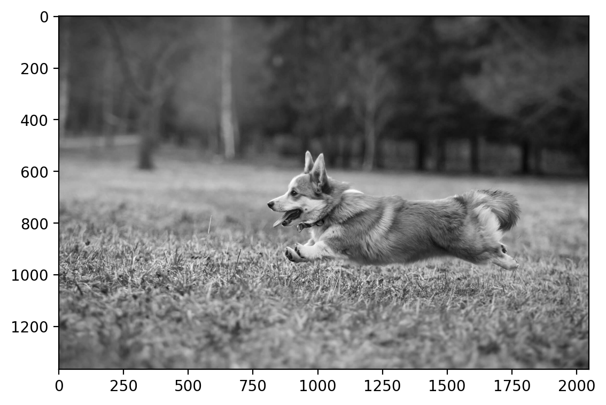
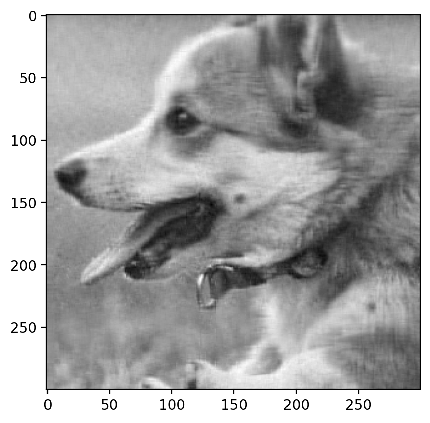

import numpy as np
import matplotlib.pyplot as plt
import pandas as pd
import seaborn as sns
%matplotlib inline
%config InlineBackend.figure_format = 'retina'Movie Recommendation using Matrix Factorization
Movie Recommendation using Matrix Factorization
# Now working with real data
# Load the data
df = pd.read_excel("Movie Recommendation 2024 (Responses).xlsx")
df.head(10)| Timestamp | Your name | Sholay | Swades (We The People) | The Matrix (I) | Interstellar | Dangal | Taare Zameen Par | Shawshank Redemption | The Dark Knight | Notting Hill | Uri: The Surgical Strike | |
|---|---|---|---|---|---|---|---|---|---|---|---|---|
| 0 | 2024-02-06 09:42:36.374 | Srijahnavi | 4.0 | 3.0 | 4.0 | 5.0 | 5.0 | 4.0 | 4.0 | 5.0 | 4.0 | 5.0 |
| 1 | 2024-02-06 09:42:50.227 | Priya | 3.0 | 3.0 | 3.0 | 4.0 | 4.0 | 4.0 | 5.0 | 3.0 | 3.0 | 4.0 |
| 2 | 2024-02-06 09:43:05.181 | Pulkit Gautam | 4.0 | 5.0 | 5.0 | 5.0 | 3.0 | 3.0 | 5.0 | 5.0 | 4.0 | 3.0 |
| 3 | 2024-02-06 09:43:16.138 | Twinkle Devda | 5.0 | 4.0 | 5.0 | 4.0 | 2.0 | 4.0 | NaN | NaN | NaN | 4.0 |
| 4 | 2024-02-06 09:43:18.300 | Ishika Raj | 5.0 | 5.0 | 4.0 | 5.0 | 5.0 | 5.0 | NaN | NaN | NaN | NaN |
| 5 | 2024-02-06 09:43:37.950 | Kaushik | 1.0 | 4.0 | 5.0 | 5.0 | 2.0 | 4.0 | 5.0 | 3.0 | NaN | 4.0 |
| 6 | 2024-02-06 09:43:48.787 | Kajal | 3.0 | 4.0 | NaN | 4.0 | 3.0 | 5.0 | NaN | NaN | NaN | 4.0 |
| 7 | 2024-02-06 09:43:58.223 | sawan verma | 4.0 | 5.0 | 5.0 | 5.0 | 4.0 | 4.0 | NaN | 4.0 | NaN | 4.0 |
| 8 | 2024-02-06 09:43:58.698 | Daksh Jain | 5.0 | NaN | 5.0 | 5.0 | 4.0 | 4.0 | 5.0 | 5.0 | NaN | 4.0 |
| 9 | 2024-02-06 09:44:13.505 | Akshat Pratap Singh | 4.0 | NaN | 5.0 | 5.0 | 4.0 | NaN | NaN | 5.0 | NaN | 4.0 |
# Discard the timestamp column
df = df.drop('Timestamp', axis=1)
# Make the "Your Name" column the index
df = df.set_index('Your name')
df| Sholay | Swades (We The People) | The Matrix (I) | Interstellar | Dangal | Taare Zameen Par | Shawshank Redemption | The Dark Knight | Notting Hill | Uri: The Surgical Strike | |
|---|---|---|---|---|---|---|---|---|---|---|
| Your name | ||||||||||
| Srijahnavi | 4.0 | 3.0 | 4.0 | 5.0 | 5.0 | 4.0 | 4.0 | 5.0 | 4.0 | 5.0 |
| Priya | 3.0 | 3.0 | 3.0 | 4.0 | 4.0 | 4.0 | 5.0 | 3.0 | 3.0 | 4.0 |
| Pulkit Gautam | 4.0 | 5.0 | 5.0 | 5.0 | 3.0 | 3.0 | 5.0 | 5.0 | 4.0 | 3.0 |
| Twinkle Devda | 5.0 | 4.0 | 5.0 | 4.0 | 2.0 | 4.0 | NaN | NaN | NaN | 4.0 |
| Ishika Raj | 5.0 | 5.0 | 4.0 | 5.0 | 5.0 | 5.0 | NaN | NaN | NaN | NaN |
| ... | ... | ... | ... | ... | ... | ... | ... | ... | ... | ... |
| Yash Bothra | 3.0 | 4.0 | 4.0 | 4.0 | 3.0 | 4.0 | 5.0 | 5.0 | NaN | 3.0 |
| Zaqi | 2.0 | 3.0 | 4.0 | 5.0 | 2.0 | 4.0 | 5.0 | 5.0 | 3.0 | 4.0 |
| Manas Kawal | 3.0 | NaN | 5.0 | 5.0 | 5.0 | 4.0 | 5.0 | 5.0 | 4.0 | 4.0 |
| Siya Patil | 5.0 | NaN | 4.0 | 4.0 | 5.0 | 4.0 | NaN | NaN | NaN | 5.0 |
| Gaurav Kumar | NaN | NaN | NaN | 4.0 | 3.0 | 5.0 | NaN | 5.0 | NaN | 3.0 |
114 rows × 10 columns
df.indexIndex(['Srijahnavi ', 'Priya', 'Pulkit Gautam', 'Twinkle Devda ',
'Ishika Raj ', 'Kaushik', 'Kajal', 'sawan verma', 'Daksh Jain',
'Akshat Pratap Singh ',
...
'Shreya Patel', 'Omkar Rajeev Prabhu', 'Nihar Shah', 'Sai Krishna ',
'Mithil Pechimuthu', 'Yash Bothra', 'Zaqi', 'Manas Kawal ',
'Siya Patil', 'Gaurav Kumar'],
dtype='object', name='Your name', length=114)# Get index for user and movie
user = 'Ayush Shrivastava'
print(user in df.index)
# Get the movie ratings for user
user_ratings = df.loc[user]
user_ratingsTrueSholay 5.0
Swades (We The People) 4.0
The Matrix (I) 5.0
Interstellar 5.0
Dangal 3.0
Taare Zameen Par 4.0
Shawshank Redemption 4.0
The Dark Knight 4.0
Notting Hill 3.0
Uri: The Surgical Strike 4.0
Name: Ayush Shrivastava, dtype: float64# Number of missing values
df.isnull().sum()Sholay 18
Swades (We The People) 45
The Matrix (I) 21
Interstellar 13
Dangal 1
Taare Zameen Par 1
Shawshank Redemption 46
The Dark Knight 31
Notting Hill 63
Uri: The Surgical Strike 11
dtype: int64# Generic Matrix Factorization (without missing values)
import torch
import torch.nn as nn
import torch.nn.functional as F
import torch.optim as optim
n_users, n_movies = 20, 10
# A is a matrix of size (n_users, n_movies) randomly generated values between 1 and 5
A = torch.randint(1, 6, (n_users, n_movies), dtype=torch.float)
Atensor([[1., 4., 5., 3., 4., 4., 2., 5., 2., 2.],
[4., 3., 1., 1., 2., 1., 3., 2., 5., 1.],
[4., 2., 2., 4., 2., 4., 1., 5., 4., 1.],
[3., 1., 3., 2., 1., 3., 1., 1., 1., 2.],
[5., 1., 5., 1., 3., 5., 2., 3., 5., 1.],
[2., 2., 3., 2., 4., 5., 3., 4., 2., 1.],
[5., 5., 1., 5., 4., 2., 5., 5., 2., 4.],
[5., 4., 2., 4., 1., 2., 2., 5., 1., 1.],
[4., 5., 5., 5., 4., 5., 1., 1., 1., 5.],
[4., 2., 5., 1., 5., 4., 1., 4., 1., 1.],
[5., 1., 3., 3., 1., 1., 2., 4., 2., 4.],
[5., 5., 4., 3., 1., 5., 3., 4., 3., 1.],
[4., 4., 3., 5., 3., 2., 4., 5., 4., 2.],
[1., 4., 3., 3., 2., 3., 2., 4., 3., 1.],
[1., 3., 4., 2., 4., 4., 2., 4., 1., 4.],
[4., 1., 3., 3., 3., 4., 2., 2., 2., 1.],
[4., 3., 4., 5., 3., 1., 2., 5., 1., 5.],
[1., 1., 1., 5., 5., 3., 4., 5., 4., 4.],
[1., 4., 4., 1., 5., 4., 3., 3., 4., 5.],
[5., 1., 5., 5., 2., 2., 3., 4., 5., 3.]])A.shapetorch.Size([20, 10])Let us decompose A as WH. W is of shape (n, k) and H is of shape (k, n). We can write the above equation as: A = WH
# Randomly initialize A and B
device = torch.device("cuda:0" if torch.cuda.is_available() else "cpu")
r = 3
W = torch.randn(n_users, r, requires_grad=True, device=device)
H = torch.randn(r, n_movies, requires_grad=True, device=device)
A = A.to(device)
# Compute the loss
with torch.no_grad():
loss = torch.norm(torch.mm(W, H) - A)
print(loss)tensor(53.8487, device='cuda:0')pd.DataFrame(torch.mm(W, H).cpu().detach().numpy()).head()| 0 | 1 | 2 | 3 | 4 | 5 | 6 | 7 | 8 | 9 | |
|---|---|---|---|---|---|---|---|---|---|---|
| 0 | 0.789320 | 0.273251 | -0.803057 | 0.026515 | -0.439304 | 0.704782 | -0.403163 | 0.184198 | -0.386802 | 0.390207 |
| 1 | -2.582092 | -0.965984 | -4.715790 | 0.464595 | -0.800138 | 2.220691 | -1.210865 | 1.380103 | -2.509600 | -0.448290 |
| 2 | -6.278386 | -2.250423 | -0.746872 | 0.326767 | 1.347383 | -1.277587 | 0.722436 | 0.489918 | -0.613798 | -2.293076 |
| 3 | -0.894911 | -0.162974 | 0.904375 | -0.071838 | -0.077017 | 0.688095 | 1.019274 | -0.818665 | 0.918633 | -0.569915 |
| 4 | 1.630395 | 0.457543 | 0.028392 | -0.036418 | 0.088358 | -0.830817 | -0.725712 | 0.438782 | -0.337688 | 0.723440 |
pd.DataFrame(A.cpu().detach().numpy()).head()| 0 | 1 | 2 | 3 | 4 | 5 | 6 | 7 | 8 | 9 | |
|---|---|---|---|---|---|---|---|---|---|---|
| 0 | 1.0 | 4.0 | 5.0 | 3.0 | 4.0 | 4.0 | 2.0 | 5.0 | 2.0 | 2.0 |
| 1 | 4.0 | 3.0 | 1.0 | 1.0 | 2.0 | 1.0 | 3.0 | 2.0 | 5.0 | 1.0 |
| 2 | 4.0 | 2.0 | 2.0 | 4.0 | 2.0 | 4.0 | 1.0 | 5.0 | 4.0 | 1.0 |
| 3 | 3.0 | 1.0 | 3.0 | 2.0 | 1.0 | 3.0 | 1.0 | 1.0 | 1.0 | 2.0 |
| 4 | 5.0 | 1.0 | 5.0 | 1.0 | 3.0 | 5.0 | 2.0 | 3.0 | 5.0 | 1.0 |
# Optimizer
optimizer = optim.Adam([W, H], lr=0.01)
# Train the model
for i in range(600):
# Compute the loss
loss = torch.norm(torch.mm(W, H) - A)
# Zero the gradients
optimizer.zero_grad()
# Backpropagate
loss.backward()
# Update the parameters
optimizer.step()
# Print the loss
if i % 10 == 0:
print(i, loss.item())0 53.84873580932617
10 51.85832214355469
20 50.30470275878906
30 48.986907958984375
40 47.58940124511719
50 45.762447357177734
60 43.2141227722168
70 39.856666564941406
80 35.923824310302734
90 31.9387149810791
100 28.36842155456543
110 25.3414249420166
120 22.89077377319336
130 21.019773483276367
140 19.64716911315918
150 18.663381576538086
160 17.948944091796875
170 17.403179168701172
180 16.958683013916016
190 16.57893943786621
200 16.24703598022461
210 15.956071853637695
220 15.702412605285645
230 15.481629371643066
240 15.287639617919922
250 15.114280700683594
260 14.95695686340332
270 14.812972068786621
280 14.680870056152344
290 14.559730529785156
300 14.448781967163086
310 14.347304344177246
320 14.25462818145752
330 14.170149803161621
340 14.093340873718262
350 14.02373218536377
360 13.960897445678711
370 13.904433250427246
380 13.853943824768066
390 13.809029579162598
400 13.769281387329102
410 13.73428726196289
420 13.703628540039062
430 13.676892280578613
440 13.653679847717285
450 13.63360595703125
460 13.616312026977539
470 13.601462364196777
480 13.588751792907715
490 13.577902793884277
500 13.568666458129883
510 13.560823440551758
520 13.554177284240723
530 13.54855728149414
540 13.543814659118652
550 13.53981876373291
560 13.536458015441895
570 13.533635139465332
580 13.531268119812012
590 13.529285430908203pd.DataFrame(torch.mm(W, H).cpu().detach().numpy()).head(2)| 0 | 1 | 2 | 3 | 4 | 5 | 6 | 7 | 8 | 9 | |
|---|---|---|---|---|---|---|---|---|---|---|
| 0 | 2.030807 | 3.324325 | 4.240799 | 2.752831 | 4.435637 | 4.398169 | 2.251596 | 3.653164 | 2.114700 | 3.350343 |
| 1 | 4.159636 | 1.692163 | 2.095336 | 2.669384 | 0.976548 | 1.772289 | 1.940019 | 2.964438 | 2.785541 | 0.846138 |
pd.DataFrame(A.cpu()).head(2)| 0 | 1 | 2 | 3 | 4 | 5 | 6 | 7 | 8 | 9 | |
|---|---|---|---|---|---|---|---|---|---|---|
| 0 | 1.0 | 4.0 | 5.0 | 3.0 | 4.0 | 4.0 | 2.0 | 5.0 | 2.0 | 2.0 |
| 1 | 4.0 | 3.0 | 1.0 | 1.0 | 2.0 | 1.0 | 3.0 | 2.0 | 5.0 | 1.0 |
def factorize(A, k, device=torch.device("cpu")):
"""Factorize the matrix A into W and H
A: input matrix of size (n_users, n_movies)
k: number of latent features
Returns W and H
W: matrix of size (n_users, k)
H: matrix of size (k, n_movies)
"""
A = A.to(device)
# Randomly initialize W and H
W = torch.randn(A.shape[0], k, requires_grad=True, device=device)
H = torch.randn(k, A.shape[1], requires_grad=True, device=device)
# Optimizer
optimizer = optim.Adam([W, H], lr=0.01)
# Train the model
for i in range(1000):
# Compute the loss
loss = torch.norm(torch.mm(W, H) - A)
# Zero the gradients
optimizer.zero_grad()
# Backpropagate
loss.backward()
# Update the parameters
optimizer.step()
return W, H, lossfor k in [1, 2, 3, 4, 5, 6, 9]:
W, H, loss = factorize(A, k, device=device)
print(k, loss.item())1 18.66737174987793
2 16.084671020507812
3 13.519211769104004
4 11.201322555541992
5 9.107473373413086
6 7.247912406921387
9 2.448281764984131pd.DataFrame(torch.mm(W,H).cpu().detach().numpy()).head(2)| 0 | 1 | 2 | 3 | 4 | 5 | 6 | 7 | 8 | 9 | |
|---|---|---|---|---|---|---|---|---|---|---|
| 0 | 1.021576 | 4.027153 | 4.947227 | 2.994748 | 4.041862 | 3.993290 | 1.872400 | 5.023528 | 2.044280 | 2.016569 |
| 1 | 3.923019 | 2.903162 | 1.188122 | 1.018530 | 1.850515 | 1.024056 | 3.455001 | 1.916324 | 4.842122 | 0.941112 |
pd.DataFrame(A.cpu()).head(2)| 0 | 1 | 2 | 3 | 4 | 5 | 6 | 7 | 8 | 9 | |
|---|---|---|---|---|---|---|---|---|---|---|
| 0 | 1.0 | 4.0 | 5.0 | 3.0 | 4.0 | 4.0 | 2.0 | 5.0 | 2.0 | 2.0 |
| 1 | 4.0 | 3.0 | 1.0 | 1.0 | 2.0 | 1.0 | 3.0 | 2.0 | 5.0 | 1.0 |
# With missing values
# Randomly replace some entries with NaN
A = torch.randint(1, 6, (n_users, n_movies), dtype=torch.float)
A[torch.rand(A.shape) < 0.5] = float('nan')
Atensor([[2., nan, 5., 4., 2., nan, 1., nan, nan, 3.],
[nan, nan, nan, 5., 3., nan, nan, 2., nan, 1.],
[4., 5., 4., 1., 5., nan, nan, 1., 4., 5.],
[4., 3., nan, 5., nan, nan, nan, nan, nan, 1.],
[2., nan, 1., nan, nan, nan, nan, nan, nan, nan],
[nan, 3., nan, nan, nan, 1., nan, 3., nan, 4.],
[1., 3., 2., nan, nan, nan, nan, nan, nan, 4.],
[nan, nan, nan, 3., nan, 2., nan, 1., 5., nan],
[nan, nan, nan, nan, nan, 5., 5., nan, nan, 1.],
[nan, 1., nan, nan, 5., nan, 2., 1., 3., nan],
[4., 5., 4., 1., nan, nan, 3., nan, 3., 5.],
[3., nan, 3., nan, 3., 3., nan, 2., nan, nan],
[nan, 4., nan, 4., nan, nan, 3., nan, 1., nan],
[3., nan, nan, 5., 4., nan, 3., nan, nan, nan],
[nan, 2., nan, nan, nan, 2., nan, 2., 2., nan],
[nan, 4., 1., 2., nan, nan, nan, nan, 4., nan],
[1., nan, 1., 2., nan, 2., 5., nan, 2., nan],
[nan, 2., nan, 3., nan, 3., 3., nan, 1., nan],
[nan, 4., 5., 1., 2., 5., 3., nan, nan, 3.],
[nan, 1., nan, nan, 4., 1., nan, nan, nan, nan]])W, H, loss = factorize(A, 2, device=device)
losstensor(nan, device='cuda:0', grad_fn=<LinalgVectorNormBackward0>)As expected, the above function does not work. Our current loss function does not handle missing values.
A.shapetorch.Size([20, 10])mask = ~torch.isnan(A)
masktensor([[ True, False, True, True, True, False, True, False, False, True],
[False, False, False, True, True, False, False, True, False, True],
[ True, True, True, True, True, False, False, True, True, True],
[ True, True, False, True, False, False, False, False, False, True],
[ True, False, True, False, False, False, False, False, False, False],
[False, True, False, False, False, True, False, True, False, True],
[ True, True, True, False, False, False, False, False, False, True],
[False, False, False, True, False, True, False, True, True, False],
[False, False, False, False, False, True, True, False, False, True],
[False, True, False, False, True, False, True, True, True, False],
[ True, True, True, True, False, False, True, False, True, True],
[ True, False, True, False, True, True, False, True, False, False],
[False, True, False, True, False, False, True, False, True, False],
[ True, False, False, True, True, False, True, False, False, False],
[False, True, False, False, False, True, False, True, True, False],
[False, True, True, True, False, False, False, False, True, False],
[ True, False, True, True, False, True, True, False, True, False],
[False, True, False, True, False, True, True, False, True, False],
[False, True, True, True, True, True, True, False, False, True],
[False, True, False, False, True, True, False, False, False, False]])mask.sum()tensor(93)W = torch.randn(A.shape[0], k, requires_grad=True, device=device)
H = torch.randn(k, A.shape[1], requires_grad=True, device=device)
diff_matrix = torch.mm(W, H)-A.to(device)
diff_matrix.shapetorch.Size([20, 10])diff_matrixtensor([[ -3.0289, nan, -1.8404, -6.6440, -5.9554, nan, -4.3658,
nan, nan, -6.2069],
[ nan, nan, nan, -4.4589, -5.1754, nan, nan,
-2.6537, nan, -4.0168],
[ -0.7127, -11.6821, -3.2689, 1.6448, -3.8675, nan, nan,
-3.2507, -5.3294, -6.7430],
[ -2.1208, 0.4956, nan, -5.0059, nan, nan, nan,
nan, nan, 0.1138],
[ 1.6098, nan, 3.4681, nan, nan, nan, nan,
nan, nan, nan],
[ nan, -4.2573, nan, nan, nan, -2.3573, nan,
-2.0646, nan, -6.0043],
[ -0.5000, 3.2015, 1.5488, nan, nan, nan, nan,
nan, nan, -1.3461],
[ nan, nan, nan, -2.7268, nan, -6.2156, nan,
-4.0452, -8.8992, nan],
[ nan, nan, nan, nan, nan, -1.6386, -3.1412,
nan, nan, 1.7203],
[ nan, -0.5364, nan, nan, -4.6901, nan, 0.1904,
0.5138, -4.8086, nan],
[ -5.2407, 2.3314, -2.7369, -2.7617, nan, nan, -2.8258,
nan, -2.5273, -1.9235],
[ -3.4302, nan, -1.8367, nan, -3.4663, -6.3333, nan,
-5.4401, nan, nan],
[ nan, -6.2419, nan, -7.8502, nan, nan, 0.5714,
nan, -3.3440, nan],
[ -5.5879, nan, nan, -8.9398, -0.4232, nan, -4.5401,
nan, nan, nan],
[ nan, -6.1907, nan, nan, nan, -1.4435, nan,
-0.6638, -1.4553, nan],
[ nan, 4.2424, -2.2983, -3.4736, nan, nan, nan,
nan, -4.9107, nan],
[ -4.3128, nan, -1.7366, -0.8696, nan, 1.6266, -8.9258,
nan, -1.1152, nan],
[ nan, -6.3231, nan, 0.3756, nan, -0.4233, 0.5720,
nan, 1.1861, nan],
[ nan, -2.2517, -6.8329, -1.2483, -2.0385, -6.0957, -4.2059,
nan, nan, -3.0660],
[ nan, -2.5897, nan, nan, -6.6265, -3.0056, nan,
nan, nan, nan]], device='cuda:0',
grad_fn=<SubBackward0>)# Mask the matrix
diff_matrix[mask].shapetorch.Size([93])# Modify the loss function to ignore NaN values
def factorize(A, k, device=torch.device("cpu")):
"""Factorize the matrix D into A and B"""
A = A.to(device)
# Randomly initialize A and B
W = torch.randn(A.shape[0], k, requires_grad=True, device=device)
H = torch.randn(k, A.shape[1], requires_grad=True, device=device)
# Optimizer
optimizer = optim.Adam([W, H], lr=0.01)
mask = ~torch.isnan(A)
# Train the model
for i in range(1000):
# Compute the loss
diff_matrix = torch.mm(W, H) - A
diff_vector = diff_matrix[mask]
loss = torch.norm(diff_vector)
# Zero the gradients
optimizer.zero_grad()
# Backpropagate
loss.backward()
# Update the parameters
optimizer.step()
return W, H, lossW, H, loss = factorize(A, 5, device=device)
losstensor(0.0325, device='cuda:0', grad_fn=<LinalgVectorNormBackward0>)torch.mm(W, H)tensor([[ 2.0060, 4.2384, 5.0177, 3.9902, 1.9983, 1.8141, 0.9947,
0.6535, -5.8801, 3.0064],
[ -2.5924, 0.4080, -1.4594, 4.9931, 2.9982, -0.8818, -1.6683,
2.0007, -6.1505, 1.0027],
[ 4.0070, 5.0059, 4.0123, 0.9978, 5.0000, 2.6739, 4.5491,
0.9965, 3.9934, 5.0040],
[ 4.0063, 3.0025, 5.2751, 5.0058, -1.0327, 5.7686, 17.8772,
-0.5065, 6.9793, 0.9997],
[ 2.0043, 1.1548, 1.0048, 2.9191, 1.4708, 2.9927, 3.1406,
1.6878, 2.3006, 0.9258],
[ 0.3356, 3.0037, 0.0982, 4.4917, 6.4616, 1.0014, 0.1354,
3.0009, -1.3240, 4.0069],
[ 1.0009, 3.0039, 2.0116, -9.5763, 2.8521, -4.9152, -12.9332,
-2.2994, -2.8702, 4.0032],
[ 2.0256, 4.3787, 2.3926, 2.9961, 5.6892, 1.9912, 9.4118,
0.9957, 4.9925, 4.8245],
[ 4.6176, 2.5496, 4.5064, 2.6404, -0.3959, 4.9912, 5.0017,
0.8769, 2.5299, 1.0006],
[ -1.3725, 0.9985, -2.2606, 0.4189, 4.9993, -1.4495, 1.9910,
1.0002, 2.9967, 2.7223],
[ 4.0084, 5.0066, 4.0151, 0.9998, 5.0623, 2.5927, 3.0007,
1.1967, 2.9927, 5.0048],
[ 3.0058, 3.1937, 3.0116, 3.0567, 3.0001, 3.0031, 0.0244,
2.0001, -0.8893, 2.7542],
[ 2.9764, 3.9994, 2.8232, 3.9924, 4.8724, 3.2035, 2.9892,
2.3888, 0.9898, 3.9700],
[ 3.0070, 0.4287, -1.4100, 5.0030, 4.0019, 5.3721, 2.9959,
4.6116, 6.7204, 1.1466],
[ 0.5388, 1.9984, 0.2752, 4.6641, 3.9920, 1.9974, 5.9558,
1.9981, 1.9922, 2.4148],
[ 0.3942, 4.0028, 1.0083, 2.0015, 6.5739, -0.0200, 7.7051,
0.6758, 3.9930, 5.1231],
[ 1.0026, 0.2624, 0.9985, 2.0028, -0.7153, 1.9998, 5.0004,
0.1934, 2.0012, -0.3363],
[ 2.3751, 1.9994, 2.1854, 2.9951, 1.5356, 2.9961, 2.9923,
1.4122, 0.9959, 1.4741],
[ 5.9310, 4.0043, 5.0074, 0.9974, 2.0018, 4.9956, 2.9986,
1.3067, 4.2646, 3.0030],
[ 1.7298, 1.0019, -0.8864, -0.2205, 4.0021, 1.0070, -7.6848,
2.8271, 0.2264, 2.0611]], device='cuda:0',
grad_fn=<MmBackward0>)df.values.shape(114, 10)A = torch.tensor(df.values, dtype=torch.float)
W, H, loss = factorize(A, 5, device=device)# Dropdown menu for user and predict for all movies
from ipywidgets import interact, widgets
def predict_movie_ratings(user, df, W, H):
idx = df.index.get_loc(user)
user_ratings = df.iloc[idx]
user_ratings = user_ratings.dropna()
user_ratings = user_ratings.to_frame().T
user_ratings = user_ratings.reindex(columns=df.columns, fill_value=float('nan'))
user_ratings = user_ratings.to_numpy()
predicted_ratings = torch.mm(W, H).cpu().detach().numpy()
return pd.DataFrame({"Observed": user_ratings.flatten(), "Predicted": predicted_ratings[idx].flatten()}, index=df.columns)predict_movie_ratings('Ayush Shrivastava', df, W, H)| Observed | Predicted | |
|---|---|---|
| Sholay | 5.0 | 4.864046 |
| Swades (We The People) | 4.0 | 4.143846 |
| The Matrix (I) | 5.0 | 4.996091 |
| Interstellar | 5.0 | 4.691528 |
| Dangal | 3.0 | 3.363646 |
| Taare Zameen Par | 4.0 | 4.089129 |
| Shawshank Redemption | 4.0 | 4.151148 |
| The Dark Knight | 4.0 | 4.241074 |
| Notting Hill | 3.0 | 2.570189 |
| Uri: The Surgical Strike | 4.0 | 3.842794 |
interact(predict_movie_ratings, user=widgets.Dropdown(options=df.index, value=df.index[0], description='User'), df=widgets.fixed(df), W=widgets.fixed(W), H=widgets.fixed(H))<function __main__.predict_movie_ratings(user, df, W, H)># Image completion
import os
if os.path.exists('dog.jpg'):
print('dog.jpg exists')
else:
!wget https://segment-anything.com/assets/gallery/AdobeStock_94274587_welsh_corgi_pembroke_CD.jpg -O dog.jpgdog.jpg exists# Read in a image from torchvision
import torchvision
img = torchvision.io.read_image("dog.jpg")
print(img.shape)torch.Size([3, 1365, 2048])# Make grayscale
img = torch.tensor(img, dtype=torch.float)
img = img.mean(dim=0, keepdim=False)
print(img.shape)torch.Size([1365, 2048])/tmp/ipykernel_3941315/232810751.py:2: UserWarning: To copy construct from a tensor, it is recommended to use sourceTensor.clone().detach() or sourceTensor.clone().detach().requires_grad_(True), rather than torch.tensor(sourceTensor).
img = torch.tensor(img, dtype=torch.float)img.shapetorch.Size([1365, 2048])plt.imshow(img, cmap='gray')
crop = torchvision.transforms.functional.crop(img, 600, 800, 300, 300)
crop.shapetorch.Size([300, 300])plt.imshow(crop, cmap='gray')
# Mask the image with NaN values
def mask_image(img, prop):
img_copy = img.clone()
mask = torch.rand(img.shape) < prop
img_copy[mask] = float('nan')
return img_copy, maskmasked_img = mask_image(crop, 0.3)masked_img[1].sum()tensor(27141)plt.imshow(masked_img[0], cmap='gray')
W, H, loss = factorize(masked_img[0], 50, device=device)losstensor(1323.5085, device='cuda:0', grad_fn=<LinalgVectorNormBackward0>)plt.imshow(torch.mm(W, H).cpu().detach().numpy(), cmap='gray')
def plot_image_completion(prop=0.1, factors=50):
masked_img, mask = mask_image(crop, prop)
W, H, loss = factorize(masked_img, factors, device=device)
fig, ax = plt.subplots(1, 2, figsize=(10, 5))
reconstructed_img = torch.mm(W, H).cpu().detach().numpy()
ax[0].imshow(masked_img, cmap='gray')
ax[0].set_title("Masked image")
ax[1].imshow(reconstructed_img, cmap='gray')
ax[1].set_title("Reconstructed image")interact(plot_image_completion, prop=widgets.FloatSlider(min=0.01, max=0.9, step=0.01, value=0.3), factors=widgets.IntSlider(min=1, max=150, step=1, value=50))<function __main__.plot_image_completion(prop=0.1, factors=50)># Now use matrix faactaorization to predict the ratings
import torch
import torch.nn as nn
import torch.nn.functional as F
# Create a class for the model
class MatrixFactorization(nn.Module):
def __init__(self, n_users, n_movies, n_factors=20):
super().__init__()
self.user_factors = nn.Embedding(n_users, n_factors)
self.movie_factors = nn.Embedding(n_movies, n_factors)
def forward(self, user, movie):
return (self.user_factors(user) * self.movie_factors(movie)).sum(1) model = MatrixFactorization(n_users, n_movies, 2)
modelMatrixFactorization(
(user_factors): Embedding(100, 2)
(movie_factors): Embedding(10, 2)
)model(torch.tensor([0]), torch.tensor([2]))tensor([-0.0271], grad_fn=<SumBackward1>)A[0, 2]tensor(5.)type(A)torch.Tensormask = ~torch.isnan(A)
# Get the indices of the non-NaN values
i, j = torch.where(mask)
# Get the values of the non-NaN values
v = A[mask]
# Store in PyTorch tensors
users = i.to(torch.int64)
movies = j.to(torch.int64)
ratings = v.to(torch.float32)pd.DataFrame({'user': users, 'movie': movies, 'rating': ratings})| user | movie | rating | |
|---|---|---|---|
| 0 | 0 | 1 | 5.0 |
| 1 | 0 | 2 | 5.0 |
| 2 | 0 | 4 | 1.0 |
| 3 | 0 | 5 | 1.0 |
| 4 | 0 | 6 | 4.0 |
| ... | ... | ... | ... |
| 512 | 98 | 8 | 2.0 |
| 513 | 98 | 9 | 4.0 |
| 514 | 99 | 0 | 1.0 |
| 515 | 99 | 4 | 2.0 |
| 516 | 99 | 6 | 4.0 |
517 rows × 3 columns
# Fit the Matrix Factorization model
model = MatrixFactorization(n_users, n_movies, 4)
optimizer = optim.Adam(model.parameters(), lr=0.01)
for i in range(1000):
# Compute the loss
pred = model(users, movies)
loss = F.mse_loss(pred, ratings)
# Zero the gradients
optimizer.zero_grad()
# Backpropagate
loss.backward()
# Update the parameters
optimizer.step()
# Print the loss
if i % 100 == 0:
print(loss.item())14.604362487792969
4.332712650299072
1.0960761308670044
0.6966323852539062
0.5388827919960022
0.45243579149246216
0.4012693464756012
0.3728969395160675
0.35568001866340637
0.34289655089378357model(users, movies)tensor([3.5693, 4.5338, 2.6934, 1.8316, 4.8915, 2.0194, 2.7778, 1.8601, 2.1124,
1.1378, 2.9079, 5.0470, 0.9911, 1.9791, 1.0050, 3.9618, 2.0085, 2.0034,
4.0113, 1.9218, 2.9801, 1.0432, 3.8993, 4.1292, 1.9357, 3.8285, 3.5266,
1.3640, 2.3989, 2.4166, 0.8559, 3.3685, 4.4493, 3.4018, 1.4722, 4.8378,
4.6684, 4.4473, 4.3097, 2.0022, 5.0147, 5.0113, 1.9599, 2.8305, 1.4493,
1.6750, 0.9520, 3.8460, 5.1279, 4.7453, 2.1484, 1.8009, 3.2104, 4.2068,
4.5473, 2.9229, 1.1817, 3.1108, 3.2157, 1.2238, 3.6272, 3.9029, 3.2554,
0.9945, 3.0062, 5.0030, 4.1144, 1.6314, 3.7945, 3.3091, 4.0727, 3.6212,
2.4359, 3.5707, 1.2826, 0.9663, 4.9973, 3.0163, 2.9916, 1.0014, 3.1734,
3.8712, 4.3364, 3.7119, 4.5313, 2.3875, 4.0274, 4.7121, 4.3851, 2.8072,
3.2066, 3.9684, 0.9307, 1.4160, 2.7484, 2.8771, 1.2753, 2.5825, 4.9857,
2.0109, 1.0080, 2.2618, 2.7936, 2.5859, 3.0972, 3.1443, 3.8655, 3.2023,
2.0061, 1.9866, 4.0068, 2.7861, 4.2803, 4.5452, 3.8177, 2.9951, 5.6040,
1.9013, 2.4498, 1.9155, 4.3239, 3.2993, 1.1275, 4.1460, 4.3619, 4.5913,
1.1365, 3.0865, 6.0992, 3.9207, 1.8325, 3.8526, 2.0000, 2.0000, 1.0255,
5.0484, 1.9858, 1.9716, 2.0854, 2.7726, 3.5053, 1.7365, 3.2607, 4.7006,
1.8830, 0.3378, 2.6222, 0.6491, 3.1144, 3.8404, 2.0632, 4.3311, 4.6138,
1.6119, 3.0444, 2.4498, 2.7860, 4.0832, 3.2681, 5.0069, 4.8745, 3.6048,
3.5065, 1.8871, 2.9108, 0.9982, 0.6787, 1.4787, 5.6890, 1.5117, 4.0205,
4.6624, 4.1051, 4.5437, 3.5410, 1.8761, 4.6653, 5.2577, 5.0311, 4.9531,
4.0022, 4.7229, 4.0406, 2.5056, 3.2014, 2.9312, 1.3051, 1.3258, 4.9233,
2.0871, 1.8761, 4.1304, 3.9279, 4.5547, 1.6639, 4.3163, 1.8149, 4.7431,
3.4398, 3.5483, 3.2541, 2.8282, 1.5230, 2.8214, 4.9214, 3.5371, 4.4522,
4.7928, 2.4932, 4.8619, 4.7693, 2.3121, 2.3021, 4.6609, 4.7478, 1.7768,
5.3910, 2.8929, 2.4920, 4.1654, 1.8382, 3.4456, 3.7108, 2.3989, 1.0480,
4.2870, 5.2730, 3.8976, 3.2956, 3.1010, 0.9666, 3.0227, 2.9491, 3.2218,
1.4033, 1.7050, 0.5457, 3.1223, 2.1794, 3.9939, 5.0190, 2.9944, 4.5670,
5.4131, 2.4720, 4.0239, 4.5689, 0.9386, 1.1827, 2.1553, 1.4232, 0.4127,
1.7502, 1.5601, 2.0953, 2.3530, 2.7085, 2.7157, 2.7900, 4.6793, 1.1711,
3.4493, 1.7701, 2.1576, 0.8294, 1.9908, 2.1975, 3.6396, 3.1952, 4.9882,
4.0091, 2.9998, 1.9985, 3.0063, 3.7149, 4.2018, 1.1992, 2.2550, 3.5132,
1.3794, 2.4434, 2.0220, 0.6691, 1.9927, 3.4666, 2.8342, 1.0393, 4.1834,
4.0819, 0.8652, 4.8585, 2.0225, 2.9662, 3.9794, 1.0412, 3.0180, 1.0117,
3.1728, 2.6027, 2.5184, 2.5120, 3.3483, 3.0602, 3.2139, 1.9144, 1.4899,
2.8253, 2.9160, 1.6410, 3.8484, 2.9637, 2.1272, 2.0490, 4.4915, 1.6853,
5.0641, 3.9315, 1.8812, 2.1028, 2.1203, 2.8898, 4.0215, 3.3032, 3.6131,
4.8380, 0.7513, 3.4182, 3.0527, 3.6200, 1.3040, 1.1657, 4.2705, 4.8569,
2.7037, 0.9142, 1.5261, 3.3970, 0.6980, 3.1131, 3.8348, 3.4478, 4.9488,
4.0077, 4.9673, 2.0816, 0.9995, 3.4965, 3.2899, 1.0624, 1.4977, 4.3810,
4.2225, 3.1540, 4.0191, 3.4060, 2.0160, 1.2814, 2.9608, 1.1513, 1.9530,
0.9872, 3.9914, 4.9865, 3.0477, 1.9701, 2.5473, 4.6173, 0.5252, 3.4813,
4.7750, 3.5971, 4.1422, 5.2524, 2.0691, 2.0039, 2.1420, 5.0156, 1.8481,
0.7781, 2.2183, 2.6443, 2.2889, 4.3373, 2.2449, 4.5594, 3.8624, 5.2333,
2.1537, 4.7373, 5.0298, 2.1322, 2.7047, 4.2308, 2.4907, 2.3259, 4.7678,
5.0266, 5.2597, 4.7697, 0.9911, 1.0440, 2.7818, 1.1585, 2.1967, 4.4422,
3.4151, 4.8498, 2.8759, 4.0001, 1.8111, 2.3611, 1.9162, 4.3893, 2.4916,
2.0815, 3.9944, 5.5013, 4.6856, 4.9904, 4.9865, 4.0133, 1.7178, 2.2895,
1.9270, 2.6042, 3.5529, 2.0969, 4.9558, 2.9138, 3.0347, 1.6650, 2.2754,
3.7474, 0.9570, 2.3175, 4.1652, 4.4857, 5.1715, 5.4181, 3.7923, 4.0080,
3.5960, 2.1456, 2.9088, 3.2796, 1.2589, 4.6664, 2.3447, 3.6577, 2.8478,
2.8383, 2.9852, 0.9179, 3.0814, 1.2291, 0.7621, 0.8185, 2.3877, 1.1364,
2.8636, 3.2811, 4.5790, 0.7829, 1.2192, 0.8060, 1.2341, 3.9681, 1.1422,
4.9521, 5.1383, 2.8294, 3.6377, 3.8734, 3.5638, 2.9749, 1.5051, 1.4258,
0.5846, 1.0630, 2.7671, 1.7912, 2.8734, 1.8916, 3.9858, 2.5439, 2.6786,
1.6704, 1.3576, 1.7701, 2.0514, 5.1632, 2.6842, 4.8280, 1.1577, 2.9727,
3.3256, 2.7693, 2.6430, 4.0140, 2.2755, 2.1973, 4.6792, 5.3522, 2.8058,
4.9664, 5.2983, 4.7749, 3.8326, 2.4944, 4.2989, 2.8784, 2.0605, 2.8428,
3.1081, 1.0411, 1.9078, 3.9594], grad_fn=<SumBackward1>)# Now, let's predict the ratings for our df dataframe
A = torch.from_numpy(df.values)
A.shapetorch.Size([45, 10])mask = ~torch.isnan(A)
# Get the indices of the non-NaN values
i, j = torch.where(mask)
# Get the values of the non-NaN values
v = A[mask]
# Store in PyTorch tensors
users = i.to(torch.int64)
movies = j.to(torch.int64)
ratings = v.to(torch.float32)pd.DataFrame({'user': users, 'movie': movies, 'rating': ratings})| user | movie | rating | |
|---|---|---|---|
| 0 | 0 | 0 | 4.0 |
| 1 | 0 | 1 | 5.0 |
| 2 | 0 | 2 | 4.0 |
| 3 | 0 | 3 | 4.0 |
| 4 | 0 | 4 | 5.0 |
| ... | ... | ... | ... |
| 371 | 44 | 3 | 4.0 |
| 372 | 44 | 4 | 4.0 |
| 373 | 44 | 5 | 4.0 |
| 374 | 44 | 6 | 4.0 |
| 375 | 44 | 7 | 5.0 |
376 rows × 3 columns
# Fit the Matrix Factorization model
n_users = A.shape[0]
n_movies = A.shape[1]
model = MatrixFactorization(n_users, n_movies, 4)
optimizer = optim.Adam(model.parameters(), lr=0.01)
for i in range(1000):
# Compute the loss
pred = model(users, movies)
loss = F.mse_loss(pred, ratings)
# Zero the gradients
optimizer.zero_grad()
# Backpropagate
loss.backward()
# Update the parameters
optimizer.step()
# Print the loss
if i % 100 == 0:
print(loss.item())19.889324188232422
3.1148574352264404
0.6727441549301147
0.5543633103370667
0.5081750750541687
0.4629250764846802
0.4147825837135315
0.36878159642219543
0.32987719774246216
0.29975879192352295# Now, let us predict the ratings for any user and movie from df for which we already have the ratings
username = 'Dhruv'
movie = 'The Dark Knight'
# Get the user and movie indices
user_idx = df.index.get_loc(username)
movie_idx = df.columns.get_loc(movie)
# Predict the rating
pred = model(torch.tensor([user_idx]), torch.tensor([movie_idx]))
pred.item(), df.loc[username, movie](5.259384632110596, 5.0)df.loc[username]Sholay NaN
Swades (We The People) NaN
The Matrix (I) 5.0
Interstellar 5.0
Dangal 3.0
Taare Zameen Par NaN
Shawshank Redemption 5.0
The Dark Knight 5.0
Notting Hill 4.0
Uri: The Surgical Strike 5.0
Name: Dhruv, dtype: float64# Now, let us predict the ratings for any user and movie from df for which we do not have the ratings
username = 'Dhruv'
movie = 'Sholay'
# Get the user and movie indices
user_idx = df.index.get_loc(username)
movie_idx = df.columns.get_loc(movie)
# Predict the rating
pred = model(torch.tensor([user_idx]), torch.tensor([movie_idx]))
pred, df.loc[username, movie](tensor([3.7885], grad_fn=<SumBackward1>), nan)# Complete the matrix
with torch.no_grad():
completed_matrix = pd.DataFrame(model.user_factors.weight @ model.movie_factors.weight.t(), index=df.index, columns=df.columns)
# round to nearest integer
completed_matrix = completed_matrix.round()completed_matrix.head()| Sholay | Swades (We The People) | The Matrix (I) | Interstellar | Dangal | Taare Zameen Par | Shawshank Redemption | The Dark Knight | Notting Hill | Uri: The Surgical Strike | |
|---|---|---|---|---|---|---|---|---|---|---|
| Your name | ||||||||||
| Nipun | 5.0 | 4.0 | 4.0 | 5.0 | 4.0 | 5.0 | 5.0 | 4.0 | 4.0 | 5.0 |
| Gautam Vashishtha | 3.0 | 3.0 | 4.0 | 4.0 | 2.0 | 3.0 | 4.0 | 5.0 | 4.0 | 3.0 |
| Eshan Gujarathi | 4.0 | 4.0 | 5.0 | 5.0 | 4.0 | 4.0 | 5.0 | 5.0 | 4.0 | 4.0 |
| Sai Krishna Avula | 4.0 | 4.0 | 3.0 | 4.0 | 4.0 | 6.0 | 4.0 | 3.0 | 3.0 | 4.0 |
| Ankit Yadav | 3.0 | 2.0 | 3.0 | 4.0 | 3.0 | 5.0 | 4.0 | 3.0 | 3.0 | 4.0 |
df.head()| Sholay | Swades (We The People) | The Matrix (I) | Interstellar | Dangal | Taare Zameen Par | Shawshank Redemption | The Dark Knight | Notting Hill | Uri: The Surgical Strike | |
|---|---|---|---|---|---|---|---|---|---|---|
| Your name | ||||||||||
| Nipun | 4.0 | 5.0 | 4.0 | 4.0 | 5.0 | 5.0 | 4.0 | 5.0 | 4.0 | 5.0 |
| Gautam Vashishtha | 3.0 | 4.0 | 4.0 | 5.0 | 3.0 | 1.0 | 5.0 | 5.0 | 4.0 | 3.0 |
| Eshan Gujarathi | 4.0 | NaN | 5.0 | 5.0 | 4.0 | 5.0 | 5.0 | 5.0 | NaN | 4.0 |
| Sai Krishna Avula | 5.0 | 3.0 | 3.0 | 4.0 | 4.0 | 5.0 | 5.0 | 3.0 | 3.0 | 4.0 |
| Ankit Yadav | 3.0 | 3.0 | 2.0 | 5.0 | 2.0 | 5.0 | 5.0 | 3.0 | 3.0 | 4.0 |